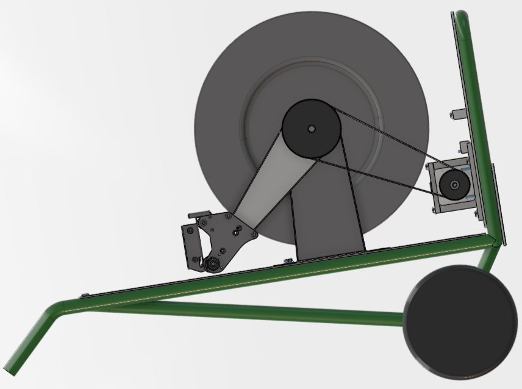
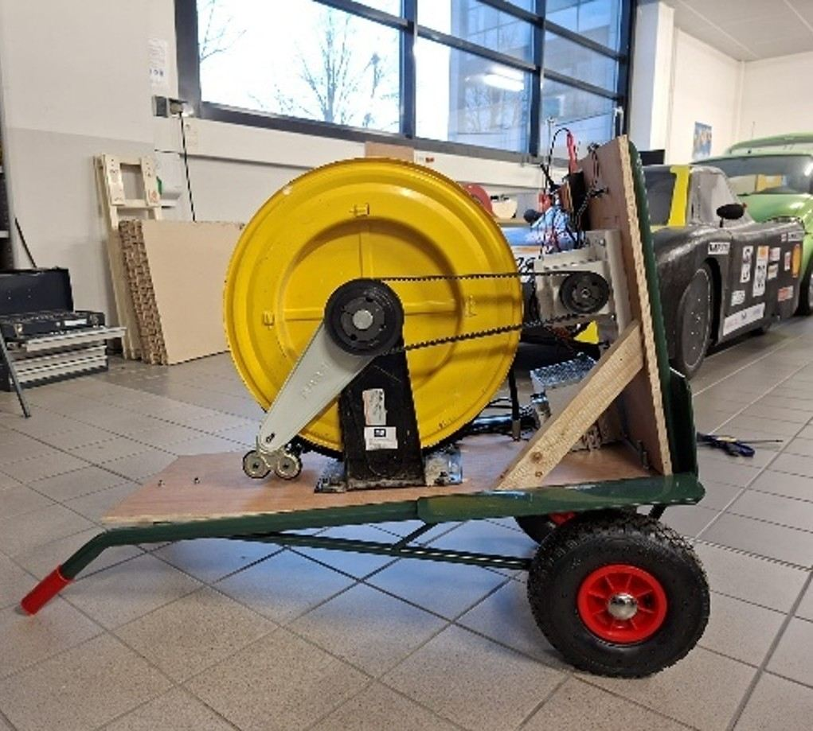
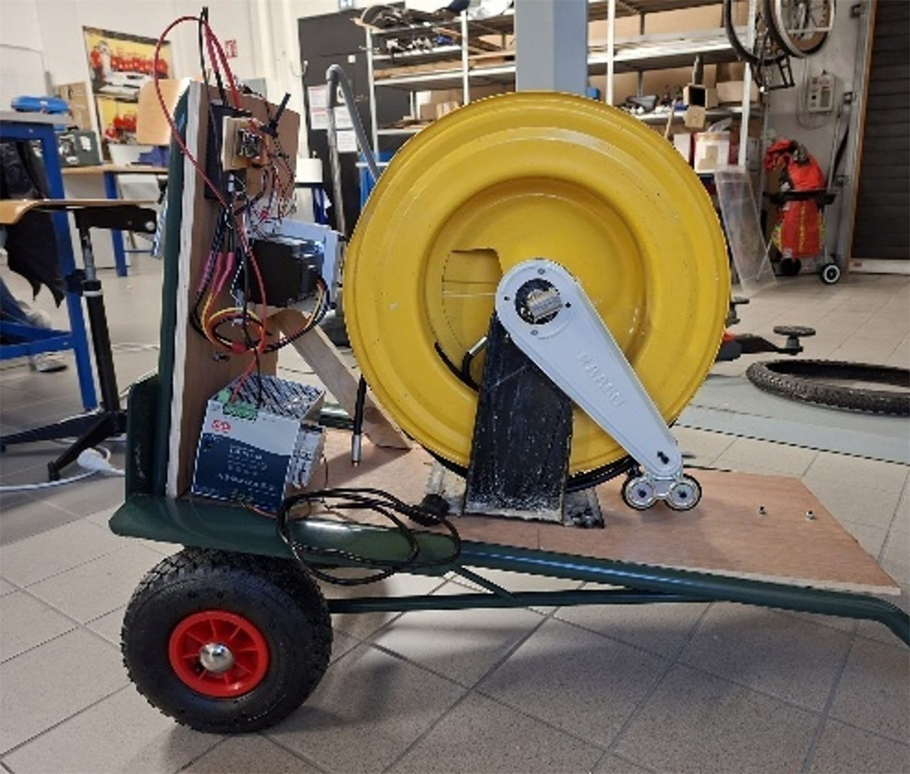

P / 02
FlyRenov -
Enrouleur de tuyau asservi pour drone
FlyRenov -
Servo-controlled hose reel for a drone
Le contexteThe context
FlyRenov nettoie les toitures avec un drone. Le drone ne transporte pas son eau : elle lui arrive du sol par un tuyau de 60 mètres sous haute pression. Ce tuyau est enroulé sur une machine posée au sol, appelée enrouleur.
FlyRenov cleans roofs with a drone. The drone does not carry its own water: it comes from the ground through a 60-metre high-pressure hose. That hose is wound on a machine standing on the ground, the hose reel.
Cette machine est le maillon faible de tout le système. Si elle est trop lourde à transporter ou trop lente à dérouler le tuyau, le drone ne peut pas travailler.
This machine is the weak link of the whole system. If it is too heavy to carry or too slow to pay out the hose, the drone cannot work.
L'entreprise nous a confié sa refonte complète, à deux, dans le cadre de notre projet de 4ᵉ année. Nous étions encadrés par M. Mourioux (responsable de la spécialité Mécatronique à l'ENSIL-ENSCI) et par Mme Postec, ingénieure mécatronique R&D chez FlyRenov.
The company entrusted the two of us with its complete redesign as our 4th-year project. We were supervised by Mr Mourioux (head of the Mechatronics programme at ENSIL-ENSCI) and Ms Postec, R&D mechatronics engineer at FlyRenov.
Le problème de la machine existanteWhat was wrong with the existing machine
La première version fonctionnait, mais restait inutilisable sur le terrain. Nous avons relevé quatre défauts :
The first version worked, but was unusable in the field. We identified four flaws:
- Beaucoup trop lourde. Montée sur un gros chariot fait sur mesure, elle demandait deux techniciens pour la bouger - et la hisser sur un toit devenait impossible.
- Trop de moteurs. Quatre en tout, dont un dédié uniquement à répartir le tuyau proprement sur la bobine. Ce mouvement peut pourtant être obtenu sans moteur du tout.
- Électronique trop compliquée. Un réseau de communication complet (bus CAN) reliait ces quatre moteurs. Pour une machine tenant sur un chariot, c'est une usine à gaz : plus de code, plus cher, et plus de pannes possibles.
- Impossible à entretenir. Les moteurs étaient vissés sur des supports fixes. Résultat : impossible de retendre la courroie quand elle se détend, ni de la changer.
- Far too heavy. Mounted on a large custom cart, it took two technicians to move it - and lifting it onto a roof was impossible.
- Too many motors. Four in total, one of them dedicated solely to spreading the hose evenly on the drum. That motion can be obtained with no motor at all.
- Overcomplicated electronics. A full communication network (CAN bus) linked the four motors. For a machine that fits on a cart, that is overkill: more code, more cost and more possible failures.
- Impossible to maintain. The motors were bolted to fixed brackets, so the belt could be neither re-tensioned when it slackened nor replaced.
Notre conclusion : inutile de réparer cette version. Il fallait tout reprendre.
Our conclusion: there was no point patching this version. It had to be redone from scratch.
Notre approche : simplifierOur approach: simplify
Une règle a guidé toute la refonte : supprimer ce qui n'apporte rien. Chaque pièce devait justifier sa présence. Quatre décisions en ont découlé.
One rule drove the whole redesign: remove whatever adds nothing. Every part had to justify its place. Four decisions followed.
- Un diable du commerce à la place du chariot. Robuste et bon marché, il est pensé pour qu'une personne seule puisse transporter l'enrouleur, y compris jusqu'à un toit. Couché à plat, il sert aussi de base stable pendant le travail.
- Deux moteurs au lieu de quatre. Nous avons supprimé le moteur qui répartissait le tuyau sur la bobine. À la place, une courroie relie ce mécanisme à l'axe principal : sa vitesse suit automatiquement celle de la bobine, sans moteur ni code. Le rapport exact de cette courroie reste à fixer, faute de données du fournisseur.
- Une carte au lieu d'un réseau. Le bus CAN laisse place à un ESP32 qui parle directement aux contrôleurs des moteurs. C'est plus simple, plus fiable, plus facile à déboguer - et l'ESP32 a le Wi-Fi, indispensable pour la suite du projet.
- Un support moteur réglable. Nous l'avons dessiné et usiné nous-mêmes à l'école. Il coulisse, ce qui permet de retendre la courroie en quelques secondes - l'un des défauts de l'ancienne version.
- An off-the-shelf hand truck instead of the cart. Sturdy and cheap, it is designed so that one person can carry the reel, even up to a roof. Laid flat, it also serves as a stable base during work.
- Two motors instead of four. We removed the motor that spread the hose on the drum. Instead, a belt links that mechanism to the main shaft: its speed automatically follows the drum, with no motor and no code. The exact belt ratio is still to be set, for lack of supplier data.
- One board instead of a network. The CAN bus gives way to an ESP32 that talks directly to the motor controllers. It is simpler, more reliable, easier to debug - and the ESP32 has Wi-Fi, which the next phase of the project needs.
- An adjustable motor mount. We designed and machined it ourselves at school. It slides, so the belt can be re-tensioned in seconds - one of the old version's flaws.
Choisir le moteur : partir du pire scénarioChoosing the motor: start from the worst case
Pour choisir le moteur, nous avons imaginé la situation la plus difficile qu'il aurait à affronter : la machine posée sur un toit, la bobine pleine, et les 60 mètres de tuyau qui pendent dans le vide. C'est là que le moteur force le plus.
To choose the motor, we pictured the hardest situation it would face: the machine on a roof, the drum full, and the 60 metres of hose hanging in the air. That is where the motor works hardest.
Le calcul se déroule ainsi :
The calculation goes as follows:
- 60 mètres de tuyau remplis d'eau pèsent 7,09 kg - c'est ce que le moteur doit retenir.
- Plus la bobine est pleine, plus l'effort demandé au moteur augmente. Un petit script Python simule l'enroulement couche par couche et donne le cas le plus défavorable.
- De là, on obtient l'effort nécessaire, que nous majorons de 50 % par sécurité : le moteur doit fournir 25 Nm.
- Le drone monte à 3 m/s : la bobine doit donc tourner à 180 tours/minute.
- Ces deux chiffres donnent la puissance nécessaire : 475 W. Nous avons choisi un moteur Nanotec de 534 W, qui garde ainsi une marge.
- 60 metres of water-filled hose weigh 7.09 kg - that is what the motor has to hold.
- The fuller the drum, the higher the load on the motor. A short Python script simulates the winding layer by layer and gives the worst case.
- From there we get the required torque, which we increase by a 50% safety margin: the motor must deliver 25 Nm.
- The drone climbs at 3 m/s, so the drum must turn at 180 rpm.
- Those two figures give the required power: 475 W. We picked a 534 W Nanotec motor, which keeps a margin.
Un compromis assumé : avec notre transmission (réduction totale de 20:1), la bobine plafonne à 150 tours/minute, un peu sous la cible de 180. Nous avons préféré garder du couple et laisser le moteur dans sa zone de bon rendement.
A deliberate trade-off: with our transmission (20:1 overall reduction), the drum tops out at 150 rpm, slightly below the 180 rpm target. We chose to keep torque and leave the motor in its efficient operating range.
L'électronique et la commandeElectronics and control
Trois éléments composent le système : une alimentation Mean Well de 960 W qui fournit le courant, un contrôleur Flipsky VESC qui pilote le moteur, et une carte ESP32 qui donne les ordres. L'ESP32 parle au contrôleur en UART. Nous avons soudé tout le circuit sur une plaque plutôt que d'utiliser une breadboard : les vibrations de la machine auraient fini par créer des faux contacts.
The system has three parts: a 960 W Mean Well power supply, a Flipsky VESC controller that drives the motor, and an ESP32 board that gives the commands. The ESP32 talks to the controller over UART. We soldered the whole circuit on a board instead of using a breadboard: the machine's vibrations would eventually have caused loose contacts.
L'opérateur dispose d'un bouton pour chaque sens de rotation et d'une molette pour régler la vitesse. Deux sécurités sont écrites dans le code :
The operator has one button per direction of rotation and a knob to set the speed. Two safety rules are written into the code:
- Le moteur ne tourne que si un seul bouton est enfoncé. Aucun bouton, ou les deux à la fois par erreur : arrêt immédiat.
- La vitesse monte toujours progressivement. Même si l'opérateur pousse la molette à fond d'un coup, le moteur accélère en douceur. Sans cela, le à-coup pourrait casser les dents de la courroie ou abîmer le réducteur.
- The motor only runs when exactly one button is pressed. No button, or both at once by mistake: immediate stop.
- Speed always ramps up gradually. Even if the operator turns the knob fully at once, the motor accelerates smoothly. Otherwise the jolt could break the belt teeth or damage the gearbox.
DémonstrationDemo
GalerieGallery



Résultats : avant / aprèsResults: before / after
- Châssis : chariot sur mesure → diable du commerce, conçu pour être déplacé par une seule personne
- Nombre de moteurs prévus : 4 → 2
- Électronique de commande : un réseau CAN à 4 nœuds → une seule carte ESP32
- Coût de la motorisation : réduit d'après notre nomenclature estimative, en supprimant le matériel surdimensionné
- Frame: custom cart → off-the-shelf hand truck, designed to be moved by one person
- Number of planned motors: 4 → 2
- Control electronics: a 4-node CAN network → a single ESP32 board
- Drive-train cost: reduced according to our estimated bill of materials, by removing oversized hardware
Statut : preuve de conceptStatus: proof of concept
Ce que nous avons livré est une preuve de concept, pas une machine finie. Le but était de valider l'architecture, pas de la produire en série.
What we delivered is a proof of concept, not a finished machine. The goal was to validate the architecture, not to mass-produce it.
C'est pourquoi le support moteur a été usiné en PVC, une matière peu chère, et non en aluminium. Ce prototype est fait pour être jeté : il sert à vérifier que les pièces s'ajustent bien et que le réglage de la courroie est pratique. Une fois ces points confirmés, on peut passer à l'aluminium sans risquer de gâcher une matière coûteuse et des heures de machine.
That is why the motor mount was machined from PVC, a cheap material, rather than aluminium. This prototype is meant to be thrown away: it checks that the parts fit and that belt adjustment is practical. Once that is confirmed, we can move to aluminium without wasting expensive material and machine hours.
Nous avons aussi conçu les pièces pour qu'elles soient simples à fabriquer : tous les trous de passage ont le même diamètre, ce qui permet de tout usiner avec un seul outil, sans jamais le changer. Et toutes les pièces ont la même épaisseur, pour être découpées dans une seule plaque.
We also designed the parts to be easy to manufacture: all clearance holes share the same diameter, so everything can be machined with a single tool without ever changing it. And all parts have the same thickness, so they can be cut from a single plate.
PerspectivesNext steps
Le but final de FlyRenov est un enrouleur qui suit le drone tout seul. Le choix de l'ESP32, avec son Wi-Fi, ouvre déjà cette porte. Trois chantiers restent à mener :
FlyRenov's end goal is a reel that follows the drone on its own. Choosing the ESP32, with its Wi-Fi, already opens that door. Three work streams remain:
- Suivre le drone automatiquement. Le drone enverrait sa position GPS à l'enrouleur, qui déroulerait juste ce qu'il faut de tuyau. La contrainte : toujours laisser 1 à 2 mètres de mou au sol, pour ne jamais tirer sur le drone en vol.
- Enrouler le tuyau bien serré, sans tirer sur le drone. Deux besoins contradictoires. La solution envisagée est un système à galets qui sépare la machine en deux zones : le tuyau est tendu côté bobine, détendu côté drone.
- Protéger l'électronique. Au rembobinage, le tuyau entraîne le moteur du système à galets, qui se met alors à produire du courant au lieu d'en consommer. Ce courant peut détruire l'alimentation. Il faudra soit le dissiper en chaleur, soit le stocker dans une batterie.
- Follow the drone automatically. The drone would send its GPS position to the reel, which would pay out just the right amount of hose. The constraint: always leave 1 to 2 metres of slack on the ground, so the drone is never pulled in flight.
- Wind the hose tightly without pulling on the drone. Two conflicting needs. The solution under consideration is a roller system that splits the machine into two zones: the hose is tensioned on the drum side and slack on the drone side.
- Protect the electronics. When rewinding, the hose drives the roller motor, which then generates current instead of consuming it. That current can destroy the power supply. It will have to be either dissipated as heat or stored in a battery.
Rapport de projetProject report
Le rapport complet (34 pages) détaille l'état de l'art, les notes de calcul, la modélisation CAO, l'architecture électronique et les annexes de dimensionnement.
The full report (34 pages, in French) covers the state of the art, the calculations, the CAD model, the electronic architecture and the sizing appendices.
Technologies
- 3DEXPERIENCE (CATIA)
- ESP32
- VESC / FOC
- UART
- C / C++
- Python
- Usinage CNC 3 axes3-axis CNC machining
- DFMA
- Dimensionnement mécanique (RDM)Mechanical sizing (strength of materials)